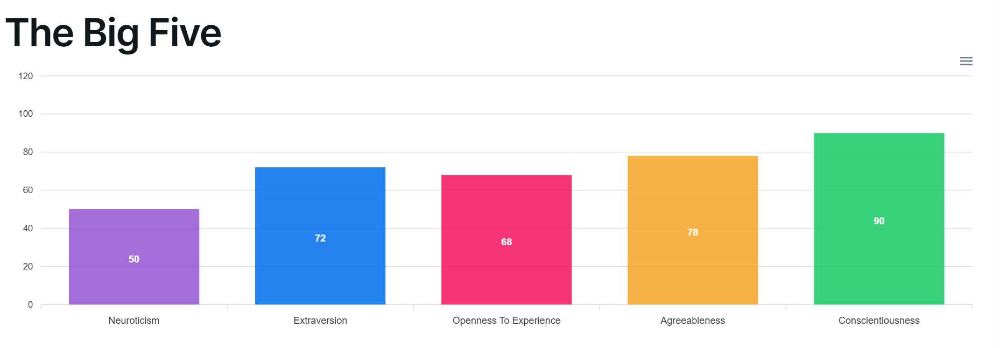

About Me
Hello! I'm Ahmad Ismail, a computer science student specializing in cybersecurity. I’m passionate about ethical hacking, understanding systems inside out, and helping organizations protect themselves against digital threats.
My Journey
My interest in cybersecurity began as a teen, watching videos on ethical hacking and realizing the power of knowledge in protecting data and privacy. I’ve since immersed myself in labs, courses, and real-world projects to build my skill set.
What Drives Me
I’m deeply curious by nature — I love solving puzzles, digging into systems, and learning how to break and fix things. I believe in using this knowledge ethically to create a safer digital world.
My Values
- 🔐 Integrity and ethics in cybersecurity
- 📚 Lifelong learning and curiosity
- 🤝 Collaboration and clear communication
My Personality Traits
This chart reflects my results from the Big Five Personality Test, highlighting qualities that influence how I learn, collaborate, and contribute.

Beyond Tech
Outside of tech, I’m an avid soccer player, a big fan of strategy games, and someone who’s always exploring new interests. I believe balance makes us better in both life and work.
Explore More
Want to know more about my work? Check out my projects or view my resume.